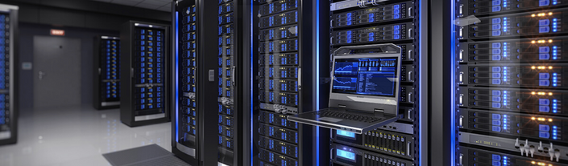

¿Qué son los volúmenes RAID?
El término RAID es un acrónimo del inglés “Redundant Array of Independent Disks”. Significa matriz redundante de discos independientes.
27 September 2022

¿Qué es RAID?
El término RAID es un acrónimo del inglés “Redundant Array of Independent Disks”. Significa matriz redundante de discos independientes. RAID es un método de combinación de varios discos duros para formar una única unidad lógica en la que se almacenan los datos de forma redundante. Ofrece mayor tolerancia a fallos y más altos niveles de rendimiento que un sólo disco duro o un grupo de discos duros independientes.
Una matriz consta de dos o más discos duros que ante el sistema principal funcionan como un único dispositivo. Un RAID, para el sistema operativo, aparenta ser un sólo disco duro lógico (LUN). Los datos se desglosan en fragmentos que se escriben en varias unidades de forma simultánea. En este método, la información se reparte entre varios discos, usando técnicas como el entrelazado de bloques (RAID nivel 0) o la duplicación de discos (RAID nivel 1) para proporcionar redundancia, reducir el tiempo de acceso, y/o obtener mayor ancho de banda para leer y/o escribir, así como la posibilidad de recuperar un sistema tras la avería de uno de los discos.
La tecnología RAID protege los datos contra el fallo de una unidad de disco duro. Si se produce un fallo, RAID mantiene el servidor activo y en funcionamiento hasta que se sustituya la unidad defectuosa. La tecnología RAID se utiliza también con mucha frecuencia para mejorar el rendimiento de servidores y estaciones de trabajo. Estos dos objetivos, protección de datos y mejora del rendimiento, no se excluyen entre sí.
RAID ofrece varias opciones, llamadas niveles RAID, cada una de las cuales proporciona un equilibrio distinto entre tolerancia a fallos, rendimiento y coste. Todos los sistemas RAID suponen la pérdida de parte de la capacidad de almacenamiento de los discos, para conseguir la redundancia o almacenar los datos de paridad.
Los sistemas RAID profesionales deben incluir los elementos críticos por duplicado: fuentes de alimentación y ventiladores redundantes y Hot Swap. De poco sirve disponer de un sistema tolerante al fallo de un disco si después falla por ejemplo una fuente de alimentación que provoca la caída del sistema.
También cada vez es más recomendable, sobre todo en instalaciones de cluster, configuraciones de dos controladoras redundantes y Hot Swap, de manera que en el caso de fallo de una de ellas se puede proceder a su sustitución sin tener que detener el funcionamiento del sistema. Además, esta configuración con controladoras redundantes nos permite conectar el sistema RAID a diferentes servidores simultáneamente.
Ventajas
RAID proporciona tolerancia a fallos, mejora el rendimiento del sistema y aumenta la productividad. Tolerancia a fallos: RAID protege contra la pérdida de datos y proporciona recuperación de datos en tiempo real con acceso interrumpido en caso de que falle un disco.
Mejora del Rendimiento/ Velocidad: Una matriz consta de dos o más discos duros que ante el sistema principal funcionan como un único dispositivo. Los datos se desglosan en fragmentos que se escriben en varias unidades de forma simultánea. Este proceso, denominado fraccionamiento de datos, incrementa notablemente la capacidad de almacenamiento y ofrece mejoras significativas de rendimiento. RAID permite a varias unidades trabajar en paralelo, lo que aumenta el rendimiento del sistema.
Mayor Fiabilidad: Las soluciones RAID emplean dos técnicas para aumentar la fiabilidad: la redundancia de datos y la información de paridad. La redundancia implica el almacenamiento de los mismos datos en más de una unidad. De esta forma, si falla una unidad, todos los datos quedan disponibles en la otra unidad, de inmediato. Aunque este planteamiento es muy eficaz, también es muy costoso, ya que exige el uso de conjuntos de unidades duplicados.
El segundo planteamiento para la protección de los datos consiste en el uso de la paridad de datos. La paridad utiliza un algoritmo matemático para describir los datos de una unidad. Cuando se produce un fallo en una unidad se leen los datos correctos que quedan y se comparan con los datos de paridad almacenados por la matriz. El uso de la paridad para obtener fiabilidad de los datos es menos costoso que la redundancia, ya que no requiere el uso de un conjunto redundante de unidades de disco.
Alta Disponibilidad: RAID aumenta el tiempo de funcionamiento y la disponibilidad de la red. Para evitar los tiempos de inactividad, debe ser posible acceder a los datos en cualquier momento. La disponibilidad de los datos se divide en dos aspectos: la integridad de los datos y tolerancia a fallos. La integridad de los datos se refiere a la capacidad para obtener los datos adecuados en cualquier momento. La mayoría de las soluciones RAID ofrecen reparación dinámica de sectores, que repara sobre la marcha los sectores defectuosos debidos a errores de software. La tolerancia a fallos, el segundo aspecto de la disponibilidad, es la capacidad para mantener los datos disponibles en caso de que se produzcan uno o varios fallos en el sistema.
Niveles de Raid
La elección de los diferentes niveles de RAID va a depender de las necesidades del usuario en lo que respecta a factores como seguridad, velocidad, capacidad, coste, etc. Cada nivel de RAID ofrece una combinación específica de tolerancia a fallos (redundancia), rendimiento y coste, diseñadas para satisfacer las diferentes necesidades de almacenamiento. La mayoría de los niveles RAID pueden satisfacer de manera efectiva sólo uno o dos de estos criterios. No hay un nivel de RAID mejor que otro; cada uno es apropiado para determinadas aplicaciones y entornos informáticos.
De hecho, resulta frecuente el uso de varios niveles RAID para distintas aplicaciones del mismo servidor. Oficialmente existen siete niveles diferentes de RAID (0-6), definidos y aprobados por el el RAID Advisory Board (RAB). Luego existen las posibles combinaciones de estos niveles (10, 50, …). Los niveles RAID 0, 1, 0+1 y 5 son los más populares.
RAID 0: Disk Striping “La más alta transferencia, pero sin tolerancia a fallos”
También conocido como “separación ó fraccionamiento/ Striping”. Los datos se desglosan en pequeños segmentos y se distribuyen entre varias unidades. Este nivel de “array” o matriz no ofrece tolerancia al fallo. Al no existir redundancia, RAID 0 no ofrece ninguna protección de los datos. El fallo de cualquier disco de la matriz tendría como resultado la pérdida de los datos y sería necesario restaurarlos desde una copia de seguridad. Por lo tanto, RAID 0 no se ajusta realmente al acrónimo RAID. Consiste en una serie de unidades de disco conectadas en paralelo que permiten una transferencia simultánea de datos a todos ellos, con lo que se obtiene una gran velocidad en las operaciones de lectura y escritura.
La velocidad de transferencia de datos aumenta en relación al número de discos que forman el conjunto. Esto representa una gran ventaja en operaciones secuenciales con ficheros de gran tamaño. Por lo tanto, este array es aconsejable en aplicaciones de tratamiento de imágenes, audio, video o CAD/CAM, es decir, es una buena solución para cualquier aplicación que necesite un almacenamiento a gran velocidad pero que no requiera tolerancia a fallos. Se necesita un mínimo de dos unidades de disco para implementar una solución RAID 0.
RAID 1: Mirroring “Redundancia. Más rápido que un disco y más seguro”
También llamado “Mirroring” o “Duplicación” (Creación de discos en espejo). Se basa en la utilización de discos adicionales sobre los que se realiza una copia en todo momento de los datos que se están modificando. RAID 1 ofrece una excelente disponibilidad de los datos mediante la redundancia total de los mismos. Para ello, se duplican todos los datos de una unidad o matriz en otra.
De esta manera se asegura la integridad de los datos y la tolerancia al fallo, pues en caso de avería, la controladora sigue trabajando con los discos no dañados sin detener el sistema. Los datos se pueden leer desde la unidad o matriz duplicada sin que se produzcan interrupciones. RAID 1 es una alternativa costosa para los grandes sistemas, ya que las unidades se deben añadir en pares para aumentar la capacidad de almacenamiento.
Sin embargo, RAID 1 es una buena solución para las aplicaciones que requieren redundancia cuando hay sólo dos unidades disponibles. Los servidores de archivos pequeños son un buen ejemplo. Se necesita un mínimo de dos unidades para implementar una solución RAID 1.
RAID 0+1/ RAID 0/1 ó RAID 10: “Ambos mundos”
Combinación de los arrays anteriores que proporciona velocidad y tolerancia al fallo simultáneamente. El nivel de RAID 0+1 fracciona los datos para mejorar el rendimiento, pero también utiliza un conjunto de discos duplicados para conseguir redundancia de datos. Al ser una variedad de RAID híbrida, RAID 0+1 combina las ventajas de rendimiento de RAID 0 con la redundancia que aporta RAID 1.
Sin embargo, la principal desventaja es que requiere un mínimo de cuatro unidades y sólo dos de ellas se utilizan para el almacenamiento de datos. Las unidades se deben añadir en pares cuando se aumenta la capacidad, lo que multiplica por dos los costes de almacenamiento. El RAID 0+1 tiene un rendimiento similar al RAID 0 y puede tolerar el fallo de varias unidades de disco. Una configuración RAID 0+1 utiliza un número par de discos (4, 6, 8) creando dos bloques. Cada bloque es una copia exacta del otro, de ahí RAID 1, y dentro de cada bloque la escritura de datos se realiza en modo de bloques alternos, el sistema RAID 0. RAID 0+1 es una excelente solución para cualquier uso que requiera gran rendimiento y tolerancia a fallos, pero no una gran capacidad.
Se utiliza normalmente en entornos como servidores de aplicaciones, que permiten a los usuarios acceder a una aplicación en el servidor y almacenar datos en sus discos duros locales, o como los servidores web, que permiten a los usuarios entrar en el sistema para localizar y consultar información. Este nivel de RAID es el más rápido, el más seguro, pero por contra el más costoso de implementar.
RAID 2: “Acceso paralelo con discos especializados. Redundancia a través del código Hamming”
El RAID nivel 2 adapta la técnica comúnmente usada para detectar y corregir errores en memorias de estado sólido. En un RAID de nivel 2, el código ECC (Error Correction Code) se intercala a través de varios discos a nivel de bit. El método empleado es el Hamming. Puesto que el código Hamming se usa tanto para detección como para corrección de errores (Error Detection and Correction), RAID 2 no hace uso completo de las amplias capacidades de detección de errores contenidas en los discos. Las propiedades del código Hamming también restringen las configuraciones posibles de matrices para RAID 2, particularmente el cálculo de paridad de los discos. Por lo tanto, RAID 2 no ha sido apenas implementado en productos comerciales, lo que también es debido a que requiere características especiales en los discos y no usa discos estándares.
Debido a que es esencialmente una tecnología de acceso paralelo, RAID 2 está más indicado para aplicaciones que requieran una alta tasa de transferencia y menos conveniente para aquellas otras que requieran una alta tasa de demanda I/O.
RAID 3: “Acceso síncrono con un disco dedicado a paridad”
Dedica un único disco al almacenamiento de información de paridad. La información de ECC (Error Checking and Correction) se usa para detectar errores. La recuperación de datos se consigue calculando el O exclusivo (XOR) de la información registrada en los otros discos. La operación I/O accede a todos los discos al mismo tiempo, por lo cual el RAID 3 es mejor para sistemas de un sólo usuario con aplicaciones que contengan grandes registros.
RAID 3 ofrece altas tasas de transferencia, alta fiabilidad y alta disponibilidad, a un coste intrínsicamente inferior que un Mirroring (RAID 1). Sin embargo, su rendimiento de transacción es pobre porque todos los discos del conjunto operan al unísono. Se necesita un mínimo de tres unidades para implementar una solución RAID 3.
RAID 4: “Acceso Independiente con un disco dedicado a paridad.”
Basa su tolerancia al fallo en la utilización de un disco dedicado a guardar la información de paridad calculada a partir de los datos guardados en los otros discos. En caso de avería de cualquiera de las unidades de disco, la información se puede reconstruir en tiempo real mediante la realización de una operación lógica de O exclusivo. Debido a su organización interna, este RAID es especialmente indicado para el almacenamiento de ficheros de gran tamaño, lo cual lo hace ideal para aplicaciones gráficas donde se requiera, además, fiabilidad de los datos. Se necesita un mínimo de tres unidades para implementar una solución RAID 4. La ventaja con el RAID 3 está en que se puede acceder a los discos de forma individual.
RAID 5: “Acceso independiente con paridad distribuida.”
Este array ofrece tolerancia al fallo, pero además, optimiza la capacidad del sistema permitiendo una utilización de hasta el 80% de la capacidad del conjunto de discos. Esto lo consigue mediante el cálculo de información de paridad y su almacenamiento alternativo por bloques en todos los discos del conjunto. La información del usuario se graba por bloques y de forma alternativa en todos ellos. De esta manera, si cualquiera de las unidades de disco falla, se puede recuperar la información en tiempo real, sobre la marcha, mediante una simple operación de lógica de O exclusivo, sin que el servidor deje de funcionar.
Así pues, para evitar el problema de cuello de botella que plantea el RAID 4 con el disco de comprobación, el RAID 5 no asigna un disco específico a esta misión sino que asigna un bloque alternativo de cada disco a esta misión de escritura. Al distribuir la función de comprobación entre todos los discos, se disminuye el cuello de botella y con una cantidad suficiente de discos puede llegar a eliminarse completamente, proporcionando una velocidad equivalente a un RAID 0.
RAID 5 es el nivel de RAID más eficaz y el de uso preferente para las aplicaciones de servidor básicas para la empresa. Comparado con otros niveles RAID con tolerancia a fallos, RAID 5 ofrece la mejor relación rendimiento-coste en un entorno con varias unidades. Gracias a la combinación del fraccionamiento de datos y la paridad como método para recuperar los datos en caso de fallo, constituye una solución ideal para los entornos de servidores en los que gran parte del E/S es aleatoria, la protección y disponibilidad de los datos es fundamental y el coste es un factor importante. Este nivel de array es especialmente indicado para trabajar con sistemas operativos multiusuarios.
Se necesita un mínimo de tres unidades para implementar una solución RAID 5. Los niveles 4 y 5 de RAID pueden utilizarse si se disponen de tres o más unidades de disco en la configuración, aunque su resultado óptimo de capacidad se obtiene con siete o más unidades. RAID 5 es la solución más económica por megabyte, que ofrece la mejor relación de precio, rendimiento y disponibilidad para la mayoría de los servidores.
RAID 6: “Acceso independiente con doble paridad”
Similar al RAID 5, pero incluye un segundo esquema de paridad distribuido por los distintos discos y por tanto ofrece tolerancia extremadamente alta a los fallos y a las caídas de disco, ofreciendo dos niveles de redundancia. Hay pocos ejemplos comerciales en la actualidad, ya que su coste de implementación es mayor al de otros niveles RAID, ya que las controladoras requeridas que soporten esta doble paridad son más complejas y caras que las de otros niveles RAID. Así pues, comercialmente no se implementa.